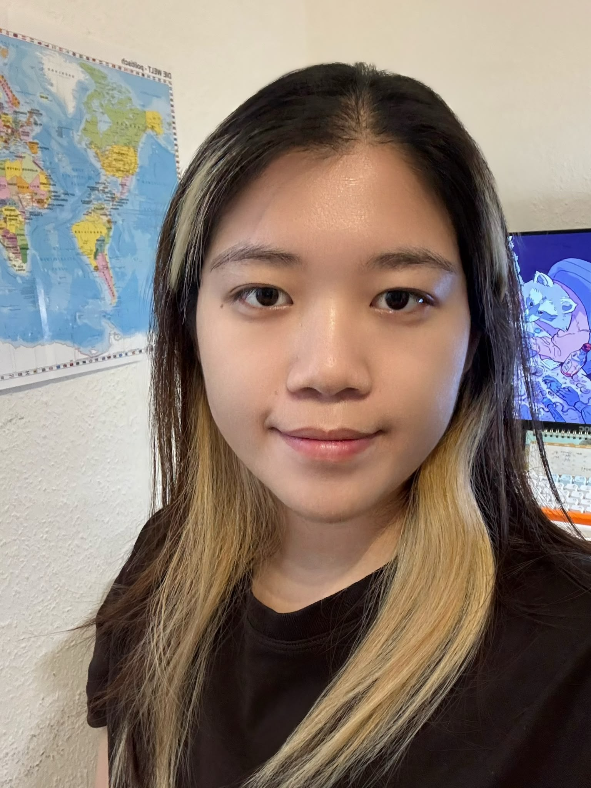

Processor Microarchitecture
RISC-V processors, pipelines, execution units, and architectural extensions.
M.Sc. student in Electrical Engineering and Information Technology at Karlsruhe Institute of Technology (KIT), specializing in System-on-Chip design.

Four connected areas that shape my projects and next research questions.
RISC-V processors, pipelines, execution units, and architectural extensions.
Control-flow integrity, data-flow integrity, and processor-level enforcement.
Performance, power and area trade-offs across processor and SoC design.
Memory-centric architectures and data movement in heterogeneous systems.
Integration density, thermal behavior, and the implications for system design.
Simulation, differential testing, waveforms, and synthesis-guided iteration.
Design details, measured outcomes, and public repositories where available.
Microarchitectural support for RISC-V forward-edge control-flow integrity (Zicfilp) in an out-of-order core: landing-pad checks, pipeline integration, exception handling, and verification.
Custom vector dot-product instructions in XiangShan Kunminghu V2, with shared arithmetic, 2:4 structured sparsity, NEMU differential testing, and standard-cell synthesis. Results: 1.480× dense speedup, 32/32 MLP outputs matched, and +1.579% mapped VIAluFix area (pre-layout).
Turning specification excerpts into a structured catalogue while distinguishing implementation parameters, architectural constants, and normative requirements.
Self-checking RTL implementations of a landing-pad packet finite-state machine and a four-entry 32-bit content-addressable memory.
The mentorship implementation and the public SystemVerilog coding exercises are separate projects. More repositories are available on my GitHub ↗.
A focus on architecture, hardware implementation, and learning by building.
Project with mentors from Barcelona Supercomputing Center (BSC) and Inria's SUSHI team. Focus: Sargantana, Zicfilp, RTL integration, and verification.
Custom INT8 dense/sparse instructions, hardware evaluation, differential testing, and application benchmarking.
Explored hardware-aware neural architecture search for spiking neural networks and the effect of implementation constraints on model design.
Integrated open-source IP cores into a RISC-V SoC on FPGA, building experience in RTL design and hardware integration.
Near-Memory Computing in 3D-Integrated Systems.
M.Sc. Electrical Engineering and Information Technology. Specialization: System-on-Chip Design.
Software and hardware tools used across academic and independent projects.
SystemVerilog · Chisel · RISC-V ISA · Python · C
Verilator · NEMU Difftest · GTKWave · OpenOCD
Yosys · RTL verification · Git · Linux · Benchmarking
Interested in RISC-V, processor architecture, digital hardware design, or collaborative research? You can find my public work and reach out via GitHub.